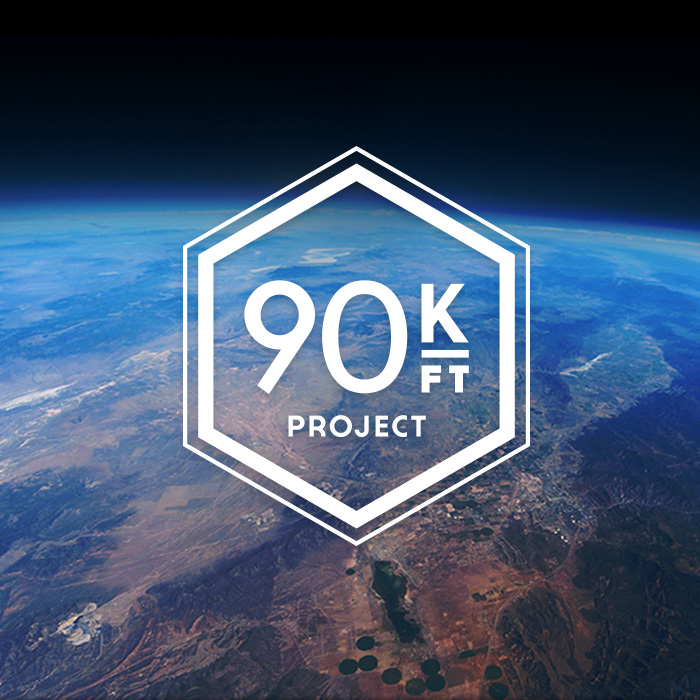

<!DOCTYPE html>
<html>
	<head>
		<meta charset="utf-8">
		<meta name="viewport" content="width=device-width, initial-scale=1">
		<title>jQuery Mobile: Theme Download</title>
		<link rel="stylesheet" href="themes/Main-black.css" />
		<link rel="stylesheet" href="http://code.jquery.com/mobile/1.3.0/jquery.mobile.structure-1.3.0.min.css" />
        <link href="themes/mitch.css" rel="stylesheet" type="text/css">
        <script src="http://code.jquery.com/jquery-1.9.1.min.js"></script>
		<script src="http://code.jquery.com/mobile/1.3.0/jquery.mobile-1.3.0.min.js"></script>
        
        <!--Flexslider stuff ----------------------------->
        <!-- Demo CSS -->
        <link rel="stylesheet" href="css/flexslider.css" type="text/css" media="screen" />
        <script src="js/modernizr.js"></script>
        
        <!-- web fonts, by google -->
        <link href='http://fonts.googleapis.com/css?family=Open+Sans+Condensed:300,700,300italic' rel='stylesheet' type='text/css'>
        <link href='http://fonts.googleapis.com/css?family=Open+Sans:300italic,400italic,600italic,700italic,800italic,400,800,700,600,300' rel='stylesheet' type='text/css'>


        
        
	</head>
	<body>
		<div data-role="page" data-theme="a">
        
       	<div data-role="header" data-theme="a" data-position="fixed" class="shadow" data-id="navh">
            	<h1>Home</h1>
            </div>
        
			<div data-role="content" data-theme="a" id="no-padding">
            
        
        <div class="flexslider">
          <ul class="slides">
            <li>
  	    	    
  	    		</li>
  	    		<li>
  	    	    
  	    		</li>
  	    		<li>
  	    	    
  	    		</li>
  	    		<li>
  	    	    
  	    		</li>
          </ul>
        </div>
            
            <div id="shim">
            
				<h2>Welcome</h2>
                
				<p>The 90,000ft project helps you see your world from a whole new perspective. Capture great memories and share your experiences with others in the world.</p>
                
                <h4>Instructions</h4>
                <p>This app allows you to accurately track and record data from our unique HERO gps device, or from cellphones with tracking enabled.</p>
                
                
                
                
                <div>
                    <div class="shim-2">
                        <h3 id="resources-h3">Resources</h3>
                        <p>Start by researching the right equipment for the journey. Tap the resources icon.</p>
                    </div>
                </div>
                
                <div>
                    <div class="shim-2">    
                        <h3>Prepare to Launch</h3>
                        <p>Enter all the vital information needed for flight tracker. When ready, launch the balloon!</p>
                    </div>
                </div>
                
                <div>
                	<div class="shim-2">
                    <h3>Map</h3>
                    <p>After launching, keep a close eye on the journey of your balloon. View flight data, where it is going and where it will land.</p>
                    </div>
                </div>
                
                
                <div>
                	<div class="shim-2"> 
                    <h3>Data</h3>
                    <p>See every detail of the flight, and save it to share with friends and family on the web at 90kft.com and on social media site.</p>
                    </div>
                </div>
                
                
                
                
                
                
			</div>
	
	<div data-role="footer" data-position="fixed" data-theme="b" data-id="navp">
		<div data-role="navbar" data-theme="b">
		<ul>
				<li><a href="#" data-icon="home" class="ui-btn-active ui-state-persist" data-transition="none" data-inline="true">Home</a></li>
                <li><a href="links.html" data-icon="bars" data-transition="none" data-inline="true">Links</a></li>
				<li><a href="launch.html" data-icon="check" data-transition="none">Launch</a></li>
				<li><a href="map.html" data-icon="gear" data-transition="none">Map</a></li>
                <li><a href="data.html" data-icon="info" data-transition="none">Data</a></li>
		</ul>
		</div>
	</div>
            
	</div>
        
        
          <!-- jQuery -->
  <script src="http://ajax.googleapis.com/ajax/libs/jquery/1/jquery.min.js"></script>
  <script>window.jQuery || document.write('<script src="js/libs/jquery-1.7.min.js">\x3C/script>')</script>
  
  <!-- FlexSlider -->
  <script defer src="js/jquery.flexslider.js"></script>
  
  <script type="text/javascript">
 
    $(window).load(function(){
      $('.flexslider').flexslider({
        animation: "slide",
        start: function(slider){
          $('body').removeClass('loading');
        }
      });
    });
  </script>
  
  <!-- Optional FlexSlider Additions -->
  <script src="js/jquery.easing.js"></script>
  <script src="js/jquery.mousewheel.js"></script>
  <script defer src="js/demo.js"></script>
        
        
	</body>
</html>